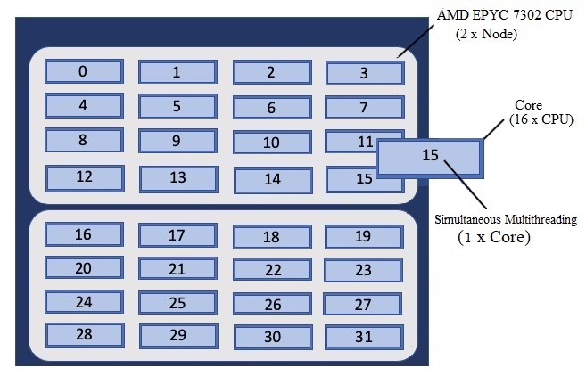
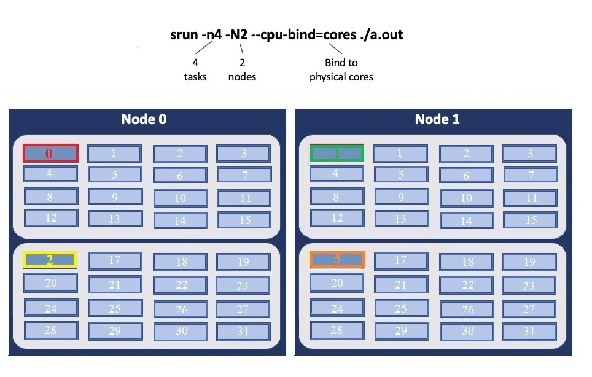
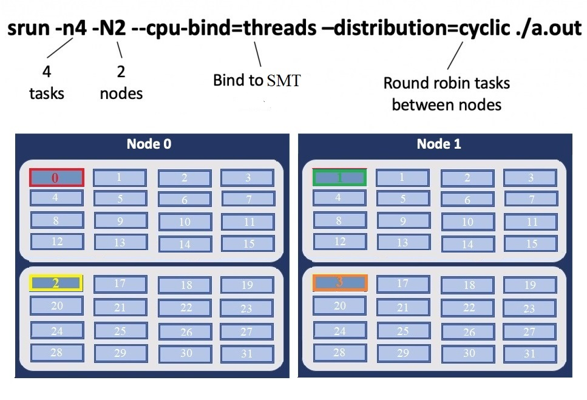

Andes User Guide
System Overview
Andes is a 704-compute node commodity-type linux cluster. The primary purpose of Andes is to provide a conduit for large-scale scientific discovery via pre/post processing and analysis of simulation data generated on Summit.
Compute nodes
Andes contains 704 compute nodes and 9 GPU nodes. Andes has two partitions:
Partition |
Node Count |
Memory |
GPU |
CPU |
|---|---|---|---|---|
batch (default) |
704 |
256 GB |
N/A |
[2x] AMD EPYC 7302 16Core Processor 3.0 GHz, 16 cores (total 32 cores per node) |
gpu |
9 |
1 TB |
[2x] NVIDIA® K80 |
[2x] Intel® Xeon® E5-2695 @2.3 GHz - 14 cores, 28 HT (total 28 cores, 56 HT per node) |
Batch Partition
The first 704 nodes make up the batch partition, where each node contains two 16-core 3.0 GHz AMD EPYC 7302 processors with AMD’s Simultaneous Multithreading (SMT) Technology and 256GB of main memory. Each CPU in this partition features 16 physical cores, for a total of 32 physical cores per node.
GPU Partition
Andes also has 9 large memory/GPU nodes, which make up the gpu partition. These nodes each have 1TB of main memory and two NVIDIA K80 GPUs in addition to two 14-core 2.30 GHz Intel Xeon processors with HT Technology. Each CPU in this partition features 14 physical cores, for a total of 28 physical cores per node. With Hyper-Threading enabled, these nodes have 56 logical cores that can execute 56 hardware threads for increased parallelism.
Note
To access the gpu partition, batch job submissions should request -p gpu.
Please see the Batch Queues on Andes section to learn about the queuing policies for these two partitions. Both compute partitions are accessible through the same batch queue from Andes’s Login nodes.
Andes features a S8500 Series HDR Infiniband interconnect, with a maximum theoretical transfer rate of 200 Gb/s.
Login nodes
Andes features 8 login nodes which are identical to the batch partition compute nodes. The login nodes provide an environment for editing, compiling, and launching codes onto the compute nodes. All Andes users will access the system through these same login nodes, and as such, any CPU- or memory-intensive tasks on these nodes could interrupt service to other users. As a courtesy, we ask that you refrain from doing any analysis or visualization tasks on the login nodes.
To connect to Andes, ssh to andes.olcf.ornl.gov
ssh username@andes.olcf.ornl.gov
For more information on connecting to OLCF resources, see Connecting for the first time.
File systems
The OLCF’s center-wide Orion Lustre HPE ClusterStor Filesystem and Summit’s Alpine2 are available on Andes for computational work. An NFS-based file system provides User Home Directories (NFS) and Project Home Directories (NFS). Additionally, the OLCF’s HPSS Data Archival System provides archival spaces.
LFS setstripe wrapper
The OLCF provides a wrapper for the lfs setstripe command that simplifies the process of striping files. The wrapper will enforce that certain settings are used to ensure that striping is done correctly. This will help to ensure good performance for users as well as prevent filesystem issues that could arise from incorrect striping practices. The wrapper is accessible via the lfs-wrapper module and will soon be added to the default environment on Frontier.
Orion is different than other Lustre filesystems that you may have used previously. To make effective use of Orion and to help ensure that the filesystem performs well for all users, it is important that you do the following:
Use the capacity OST pool tier (e.g.
lfs setstripe -p capacity)Stripe across no more than 450 OSTs (e.g.
lfs setstripe -c<= 450)
When the module is active in your environment, the wrapper will enforce the above settings. The wrapper will also do the following:
If a user provides a stripe count of -1 (e.g.
lfs setstripe -c -1) the wrapper will set the stripe count to the maximum allowed by the filesystem (currently 450)If a user provides a stripe count of 0 (e.g.
lfs setstripe -c 0) the wrapper will use the OLCF default striping command which has been optimized by the OLCF filesystem managers:lfs setstripe -E 256K -L mdt -E 8M -c 1 -S 1M -p performance -z 64M -E 128G -c 1 -S 1M -z 16G -p capacity -E -1 -z 256G -c 8 -S 1M -p capacity
Please contact the OLCF User Assistance Center if you have any questions about using the wrapper or if you encounter any issues.
Shell and programming environments
OLCF systems provide hundreds of software packages and scientific libraries pre-installed at the system-level for users to take advantage of. To facilitate this, environment management tools are employed to handle necessary changes to the shell dynamically. The sections below provide information about using the management tools at the OLCF.
Default shell
A user’s default shell is selected when completing the user account request form. The chosen shell is set across all OLCF resources. Currently, supported shells include:
bash
tsch
csh
ksh
If you would like to have your default shell changed, please contact the OLCF user assistance center at help@olcf.ornl.gov.
Environment management with lmod
The modules software package allows you to dynamically modify your user
environment by using pre-written modulefiles. Environment modules are provided
through Lmod, a Lua-based module
system for dynamically altering shell environments. By managing changes to the
shell’s environment variables (such as path, ld_library_path, and
pkg_config_path), Lmod allows you to alter the software available in your
shell environment without the risk of creating package and version combinations
that cannot coexist in a single environment.
Lmod is a recursive environment module system, meaning it is aware of module compatibility and actively alters the environment to protect against conflicts. Messages to stderr are issued upon Lmod implicitly altering the environment. Environment modules are structured hierarchically by compiler family such that packages built with a given compiler will only be accessible if the compiler family is first present in the environment.
note: Lmod can interpret both Lua modulefiles and legacy Tcl modulefiles. However, long and logic-heavy Tcl modulefiles may require porting to Lua.
General usage
Typical use of Lmod is very similar to that of interacting with modulefiles on
other OLCF systems. The interface to Lmod is provided by the module command:
Command |
Description |
|---|---|
module -t list |
Shows a terse list of the currently loaded modules. |
module avail |
Shows a table of the currently available modules |
module help <modulename> |
Shows help information about <modulename> |
module show <modulename> |
Shows the environment changes made by the <modulename> modulefile |
module spider <string> |
Searches all possible modules according to <string> |
module load <modulename> […] |
Loads the given <modulename>(s) into the current environment |
module use <path> |
Adds <path> to the modulefile search cache and |
module unuse <path> |
Removes <path> from the modulefile search cache and |
module purge |
Unloads all modules |
module reset |
Resets loaded modules to system defaults |
module update |
Reloads all currently loaded modules |
Note
Modules are changed recursively. Some commands, such as
module swap, are available to maintain compatibility with scripts
using Tcl Environment Modules, but are not necessary since Lmod
recursively processes loaded modules and automatically resolves
conflicts.
Searching for modules
Modules with dependencies are only available when the underlying dependencies,
such as compiler families, are loaded. Thus, module avail will only display
modules that are compatible with the current state of the environment. To search
the entire hierarchy across all possible dependencies, the spider
sub-command can be used as summarized in the following table.
Command |
Description |
|---|---|
module spider |
Shows the entire possible graph of modules |
module spider <modulename> |
Searches for modules named <modulename> in the graph of possible modules |
module spider <modulename>/<version> |
Searches for a specific version of <modulename> in the graph of possible modules |
module spider <string> |
Searches for modulefiles containing <string> |
Defining custom module collections
Lmod supports caching commonly used collections of environment modules on a
per-user basis in $home/.lmod.d. To create a collection called “NAME” from
the currently loaded modules, simply call module save NAME. omitting “NAME”
will set the user’s default collection. Saved collections can be recalled and
examined with the commands summarized in the following table.
Command |
Description |
|---|---|
module restore NAME |
Recalls a specific saved user collection titled “NAME” |
module restore |
Recalls the user-defined defaults |
module reset |
Resets loaded modules to system defaults |
module restore system |
Recalls the system defaults |
module savelist |
Shows the list user-defined saved collections |
Note
You should use unique names when creating collections to
specify the application (and possibly branch) you are working on. For
example, app1-development, app1-production, and
app2-production.
Note
In order to avoid conflicts between user-defined collections
on multiple compute systems that share a home file system (e.g.
/ccs/home/[username]), Lmod appends the hostname of each system to the
files saved in in your ~/.lmod.d directory (using the environment
variable lmod_system_name). This ensures that only collections
appended with the name of the current system are visible.
The following screencast shows an example of setting up user-defined module collections on Summit. https://vimeo.com/293582400
Installed Software
The OLCF provides hundreds of pre-installed software packages and scientific libraries for your use, in addition to taking software installation requests. See the software page for complete details on existing installs.
Compiling
Compiling code on andes is typical of commodity or Beowulf-style HPC Linux clusters.
Available compilers
The following compilers are available on Andes:
intel, intel composer xe (default)
pgi, the portland group compilar suite
gcc, the gnu compiler collection
Upon login, default versions of the intel compiler and openmpi (message passing interface) libraries are automatically added to each user’s environment. Users do not need to make any environment changes to use the default version of intel and openmpi.
Changing compilers
If a different compiler is required, it is important to use the correct environment for each compiler. To aid users in pairing the correct compiler and environment, the module system on andes automatically pulls in libraries compiled with a given compiler when changing compilers. The compiler modules will load the correct pairing of compiler version, message passing libraries, and other items required to build and run code. To change the default loaded intel environment to the gcc environment for example, use:
$ module load gcc
This will automatically unload the current compiler and system libraries associated with it, load the new compiler environment and automatically load associated system libraries as well.
Changing versions of the same compiler
To use a specific compiler version, you must first ensure the compiler’s module is loaded, and then swap to the correct compiler version. For example, the following will configure the environment to use the gcc compilers, then load a non-default gcc compiler version:
$ module load gcc
$ module swap gcc gcc/4.7.1
note: we recommend the following general guidelines for using the programming environment modules:
Do not purge all modules; rather, use the default module environment provided at the time of login, and modify it.
Do not swap moab, torque, or mysql modules after loading a programming environment modulefile.
Compiler wrappers
Commodity clusters at the olcf can be accessed via the following wrapper programs:
mpiccto invoke the c compilermpicc,mpicxx, ormpic++to invoke the c++ compilermpif77ormpif90to invoke appropriate versions of the fortran compiler
These wrapper programs are cognizant of your currently loaded modules, and will ensure that your code links against our openmpi installation. more information about using openmpi at our center can be found in our software documentation.
Compiling threaded codes
When building threaded codes, compiler-specific flags must be included to ensure a proper build.
Openmp
For pgi, add “-mp” to the build line.
$ mpicc -mp test.c -o test.x
$ export OMP_NUM_THREADS=2
For gnu, add “-fopenmp” to the build line.
$ mpicc -fopenmp test.c -o test.x
$ export OMP_NUM_THREADS=2
For intel, add “-qopenmp” to the build line.
$ mpicc -qopenmp test.c -o test.x
$ export OMP_NUM_THREADS=2
For information on running threaded codes, please see the Thread Layout subsection of the Running Jobs section in this user guide.
Running Jobs
In High Performance Computing (HPC), computational work is performed by jobs. Individual jobs produce data that lend relevant insight into grand challenges in science and engineering. As such, the timely, efficient execution of jobs is the primary concern in the operation of any HPC system.
A job on a commodity cluster typically comprises a few different components:
A batch submission script.
A binary executable.
A set of input files for the executable.
A set of output files created by the executable.
And the process for running a job, in general, is to:
Prepare executables and input files.
Write a batch script.
Submit the batch script to the batch scheduler.
Optionally monitor the job before and during execution.
The following sections describe in detail how to create, submit, and manage jobs for execution on commodity clusters.
Login vs Compute Nodes on Commodity Clusters
Login Nodes
When you log into an OLCF cluster, you are placed on a login node. Login node resources are shared by all users of the system. Because of this, users should be mindful when performing tasks on a login node.
Login nodes should be used for basic tasks such as file editing, code
compilation, data backup, and job submission. Login nodes should not be used
for memory- or compute-intensive tasks. Users should also limit the number of
simultaneous tasks performed on the login resources. For example, a user should
not run (10) simultaneous tar processes on a login node.
Warning
Compute-intensive, memory-intensive, or otherwise disruptive processes running on login nodes may be killed without warning.
Slurm
Most OLCF resources now use the Slurm batch scheduler. Previously, most OLCF resources used the Moab scheduler. Summit and other IBM hardware use the LSF scheduler. Below is a comparison table of useful commands among the three schedulers.
Task |
LSF (Summit) |
Slurm |
|---|---|---|
View batch queue |
|
|
Submit batch script |
|
|
Submit interactive batch job |
|
|
Run parallel code within batch job |
|
|
Writing Batch Scripts
Batch scripts, or job submission scripts, are the mechanism by which a user configures and submits a job for execution. A batch script is simply a shell script that also includes commands to be interpreted by the batch scheduling software (e.g. Slurm).
Batch scripts are submitted to the batch scheduler, where they are then parsed for the scheduling configuration options. The batch scheduler then places the script in the appropriate queue, where it is designated as a batch job. Once the batch jobs makes its way through the queue, the script will be executed on the primary compute node of the allocated resources.
Components of a Batch Script
Batch scripts are parsed into the following (3) sections:
Interpreter Line
The first line of a script can be used to specify the script’s interpreter; this
line is optional. If not used, the submitter’s default shell will be used. The
line uses the hash-bang syntax, i.e., #!/path/to/shell.
Slurm Submission Options
The Slurm submission options are preceded by the string #SBATCH, making them
appear as comments to a shell. Slurm will look for #SBATCH options in a
batch script from the script’s first line through the first non-comment line. A
comment line begins with #. #SBATCH options entered after the first
non-comment line will not be read by Slurm.
Shell Commands
The shell commands follow the last #SBATCH option and represent the
executable content of the batch job. If any #SBATCH lines follow executable
statements, they will be treated as comments only.
The execution section of a script will be interpreted by a shell and can contain multiple lines of executables, shell commands, and comments. when the job’s queue wait time is finished, commands within this section will be executed on the primary compute node of the job’s allocated resources. Under normal circumstances, the batch job will exit the queue after the last line of the script is executed.
Example Batch Script
1#!/bin/bash
2#SBATCH -A XXXYYY
3#SBATCH -J test
4#SBATCH -N 2
5#SBATCH -t 1:00:00
6
7cd $SLURM_SUBMIT_DIR
8date
9srun -n 8 ./a.out
This batch script shows examples of the three sections outlined above:
Interpreter Line
1: This line is optional and can be used to specify a shell to interpret the script. In this example, the bash shell will be used.
Slurm Options
2: The job will be charged to the “XXXYYY” project.
3: The job will be named test.
4: The job will request (2) nodes.
5: The job will request (1) hour walltime.
Shell Commands
6: This line is left blank, so it will be ignored.
7: This command will change the current directory to the directory from where the script was submitted.
8: This command will run the date command.
9: This command will run (8) MPI instances of the executable a.out on the compute nodes allocated by the batch system.
Batch scripts can be submitted for execution using the sbatch command.
For example, the following will submit the batch script named test.slurm:
sbatch test.slurm
If successfully submitted, a Slurm job ID will be returned. This ID can be used to track the job. It is also helpful in troubleshooting a failed job; make a note of the job ID for each of your jobs in case you must contact the OLCF User Assistance Center for support.
Interactive Batch Jobs on Commodity Clusters
Batch scripts are useful when one has a pre-determined group of commands to execute, the results of which can be viewed at a later time. However, it is often necessary to run tasks on compute resources interactively.
Users are not allowed to access cluster compute nodes directly from a login
node. Instead, users must use an interactive batch job to allocate and gain
access to compute resources. This is done by using the Slurm salloc command.
Other Slurm options are passed to salloc on the command line as well:
$ salloc -A abc123 -p gpu -N 4 -t 1:00:00
This request will:
|
Start an interactive session |
|
Charge to the |
|
Run in the |
|
request (4) nodes… |
|
…for (1) hour |
After running this command, the job will wait until enough compute nodes are available, just as any other batch job must. However, once the job starts, the user will be given an interactive prompt on the primary compute node within the allocated resource pool. Commands may then be executed directly (instead of through a batch script).
Debugging
A common use of interactive batch is to aid in debugging efforts. interactive access to compute resources allows the ability to run a process to the point of failure; however, unlike a batch job, the process can be restarted after brief changes are made without losing the compute resource pool; thus speeding up the debugging effort.
Choosing a Job Size
Because interactive jobs must sit in the queue until enough resources become available to allocate, it is useful to know when a job can start.
Use the sbatch --test-only command to see when a job of a specific size
could be scheduled. For example, the snapshot below shows that a (2) node job
would start at 10:54.
$ sbatch --test-only -N2 -t1:00:00 batch-script.slurm
sbatch: Job 1375 to start at 2019-08-06T10:54:01 using 64 processors on nodes andes[499-500] in partition batch
Note
The queue is fluid, the given time is an estimate made from the current queue state and load. Future job submissions and job completions will alter the estimate.
Common Batch Options to Slurm
The following table summarizes frequently-used options to Slurm:
Option |
Use |
Description |
|---|---|---|
|
|
Causes the job time to be charged to |
|
|
Number of compute nodes to allocate. Jobs cannot request partial nodes. |
|
|
Maximum wall-clock time. |
|
|
Allocates resources on specified partition. |
|
|
Writes standard output to |
|
|
Writes standard error to |
|
|
Sends email to the submitter when the job fails. |
|
Sends email to the submitter when the job begins. |
|
|
Sends email to the submitter when the job ends. |
|
|
|
Specifies email address to use for
|
|
|
Sets the job name to |
|
|
Exports all environment variables from the
submitting shell into the batch job shell.
Since the login nodes differ from the service
nodes, using the |
|
|
Declare to use all the available memory of the node |
Note
Because the login nodes differ from the service nodes, using
the –get-user-env option is not recommended. Users should create the
needed environment within the batch job.
Further details and other Slurm options may be found through the sbatch man
page.
Batch Environment Variables
Slurm sets multiple environment variables at submission time. The following Slurm variables are useful within batch scripts:
Variable |
Description |
|---|---|
|
The directory from which the batch job was submitted.
By default, a new job starts in your home directory.
You can get back to the directory of job submission
with |
|
The job’s full identifier. A common use for
|
|
The number of nodes requested. |
|
The job name supplied by the user. |
|
The list of nodes assigned to the job. |
Modifying Batch Jobs
The batch scheduler provides a number of utility commands for managing submitted jobs. See each utilities’ man page for more information.
Removing and Holding Jobs
scancel
Jobs in the queue in any state can be stopped and removed from the queue
using the command scancel.
$ scancel 1234
scontrol hold
Jobs in the queue in a non-running state may be placed on hold using the
scontrol hold command. Jobs placed on hold will not be removed from the
queue, but they will not be eligible for execution.
$ scontrol hold 1234
scontrol release
Once on hold the job will not be eligible to run until it is released to
return to a queued state. The scontrol release command can be used to
remove a job from the held state.
$ scontrol release 1234
Monitoring Batch Jobs
Slurm provides multiple tools to view queue, system, and job status. Below are the most common and useful of these tools.
Job Monitoring Commands
squeue
The Slurm utility squeue can be used to view the batch queue.
To see all jobs currently in the queue:
$ squeue -l
To see all of your queued jobs:
$ squeue -l -u $USER
sacct
The Slurm utility sacct can be used to view jobs currently in the queue and
those completed within the last few days. The utility can also be used to see
job steps in each batch job.
To see all jobs currently in the queue:
$ sacct -a -X
To see all jobs including steps owned by userA currently in the queue:
$ sacct -u userA
To see all steps submitted to job 123:
$ sacct -j 123
To see all of your jobs that completed on 2019-06-10:
$ sacct -S 2019-06-10T00:00:00 -E 2019-06-10T23:59:59 -o"jobid,user,account%16,cluster,AllocNodes,Submit,Start,End,TimeLimit" -X -P
scontrol show job <jobid>
Provides additional details of given job.
sview
The sview tool provide a graphical queue monitoring tool. To use, you will
need an X server running on your local system. You will also need to tunnel X
traffic through your ssh connection:
local-system> ssh -Y username@andes.ccs.ornl.gov
andes-login> sview
Job Execution
Once resources have been allocated through the batch system, users have the option of running commands on the allocated resources’ primary compute node (a serial job) and/or running an MPI/OpenMP executable across all the resources in the allocated resource pool simultaneously (a parallel job).
Serial Job Execution
The executable portion of batch scripts is interpreted by the shell specified on the first line of the script. If a shell is not specified, the submitting user’s default shell will be used.
The serial portion of the batch script may contain comments, shell commands, executable scripts, and compiled executables. These can be used in combination to, for example, navigate file systems, set up job execution, run serial executables, and even submit other batch jobs.
Andes Compute Node Description
The following image represents a high level compute node that will be used below to display layout options.
Using srun
By default, commands will be executed on the job’s primary compute node,
sometimes referred to as the job’s head node. The srun command is used to
execute an MPI binary on one or more compute nodes in parallel.
srun accepts the following common options:
|
Minimum number of nodes |
|
Total number of MPI tasks |
|
Allow code to control thread affinity |
|
Cores per MPI task |
|
Bind to cores |
Note
If you do not specify the number of MPI tasks to srun
via -n, the system will default to using only one task per node.
MPI Task Layout
Each compute node on Andes contains two sockets each with 16 cores. Depending on your job, it may be useful to control task layout within and across nodes.
Physical Core Binding
The following will run four copies of a.out, one per CPU, two per node with physical core binding
Simultaneous Multithreading Binding
The following will run four copies of a.out, one per SMT, two per node using a round robin task layout between nodes:
Thread Layout
Thread per SMT
The following will run four copies of a.out. Each task will launch two threads.
The -c flag will provide room for the threads.
Warning
Not adding enough resources using the -c flag,
threads may be placed on the same resource.
Multiple Simultaneous Jobsteps
Multiple simultaneous sruns can be executed within a batch job by placing each
srun in the background.
1#!/bin/bash
2#SBATCH -N 2
3#SBATCH -t 1:00:00
4#SBATCH -A prj123
5#SBATCH -J simultaneous-jobsteps
6
7srun -n16 -N2 -c1 --cpu-bind=cores --exclusive ./a.out &
8srun -n8 -N2 -c1 --cpu-bind=cores --exclusive ./b.out &
9srun -n4 -N1 -c1 --cpu-bind=threads --exclusive ./c.out &
10wait
Note
The wait command must be used in a batch script
to prevent the shell from exiting before all backgrounded
sruns have completed.
Warning
The --exclusive flag must be used to prevent
resource sharing. Without the flag each backgrounded srun
will likely be placed on the same resources.
Batch Queues on Andes
The compute nodes on Andes are separated into two partitions the “batch partition” and the “GPU partition” as described in the Compute nodes section. The scheduling policies for the individual partitions are as follows:
Batch Partition Policy (default)
Jobs that do not specify a partition will run in the 704 node batch partition:
Bin |
Node Count |
Duration |
Policy |
|---|---|---|---|
A |
1 - 16 Nodes |
0 - 48 hr |
max 4 jobs running and 4 jobs eligible per user in bins A, B, and C |
B |
17 - 64 Nodes |
0 - 36 hr |
|
C |
65 - 384 Nodes |
0 - 3 hr |
GPU Partition Policy
To access the 9 node GPU Partition batch job submissions should request -p
gpu
Bin |
Node Count |
Duration |
Policy |
|---|---|---|---|
A |
1 - 2 Nodes |
0 - 48 hrs |
max 1 job running per user |
B |
3 - 8 Nodes |
0 - 6 hrs |
Note
The queue structure was designed based on user feedback and analysis of batch jobs over the recent years. However, we understand that the structure may not meet the needs of all users. If this structure limits your use of the system, please let us know. We want Andes to be a useful OLCF resource and will work with you providing exceptions or even changing the queue structure if necessary.
If your jobs require resources outside these queue policies such as higher priority or longer walltimes, please contact help@olcf.ornl.gov.
Allocation Overuse Policy
Projects that overrun their allocation are still allowed to run on OLCF systems, although at a reduced priority. Like the adjustment for the number of processors requested above, this is an adjustment to the apparent submit time of the job. However, this adjustment has the effect of making jobs appear much younger than jobs submitted under projects that have not exceeded their allocation. In addition to the priority change, these jobs are also limited in the amount of wall time that can be used.
For example, consider that job1 is submitted at the same time as job2.
The project associated with job1 is over its allocation, while the project
for job2 is not. The batch system will consider job2 to have been
waiting for a longer time than job1. In addition, projects that are at 125%
of their allocated time will be limited to only one running job at a time. The
adjustment to the apparent submit time depends upon the percentage that the
project is over its allocation, as shown in the table below:
% Of Allocation Used |
Priority Reduction |
number eligible-to-run |
number running |
|---|---|---|---|
< 100% |
0 days |
4 jobs |
unlimited jobs |
100% to 125% |
30 days |
4 jobs |
unlimited jobs |
> 125% |
365 days |
4 jobs |
1 job |
Job Accounting on Andes
Jobs on Andes are scheduled in full node increments; a node’s cores cannot be allocated to multiple jobs. Because the OLCF charges based on what a job makes unavailable to other users, a job is charged for an entire node even if it uses only one core on a node. To simplify the process, users are given a multiples of entire nodes through Slurm.
Allocations on Andes are separate from those on Summit and other OLCF resources.
Node-Hour Calculation
The node-hour charge for each batch job will be calculated as follows:
node-hours = nodes requested * ( batch job endtime - batch job starttime )
Where batch job starttime is the time the job moves into a running state, and batch job endtime is the time the job exits a running state.
A batch job’s usage is calculated solely on requested nodes and the batch job’s start and end time. The number of cores actually used within any particular node within the batch job is not used in the calculation. For example, if a job requests (6) nodes through the batch script, runs for (1) hour, uses only (2) CPU cores per node, the job will still be charged for 6 nodes * 1 hour = 6 node-hours.
Viewing Usage
Utilization is calculated daily using batch jobs which complete between 00:00 and 23:59 of the previous day. For example, if a job moves into a run state on Tuesday and completes Wednesday, the job’s utilization will be recorded Thursday. Only batch jobs which write an end record are used to calculate utilization. Batch jobs which do not write end records due to system failure or other reasons are not used when calculating utilization. Jobs which fail because of run-time errors (e.g. the user’s application causes a segmentation fault) are counted against the allocation.
Each user may view usage for projects on which they are members from the command
line tool showusage and the myOLCF site.
On the Command Line via showusage
The showusage utility can be used to view your usage from January 01
through midnight of the previous day. For example:
$ showusage
Usage:
Project Totals
Project Allocation Usage Remaining Usage
_________________|______________|___________|____________|______________
abc123 | 20000 | 126.3 | 19873.7 | 1560.80
The -h option will list more usage details.
On the Web via myOLCF
More detailed metrics may be found on each project’s usage section of the myOLCF site. The following information is available for each project:
YTD usage by system, subproject, and project member
Monthly usage by system, subproject, and project member
YTD usage by job size groupings for each system, subproject, and project member
Weekly usage by job size groupings for each system, and subproject
Batch system priorities by project and subproject
Project members
The myOLCF site is provided to aid in the utilization and management of OLCF allocations. See the myOLCF Documentation for more information.
If you have any questions or have a request for additional data, please contact the OLCF User Assistance Center.
Debugging
Linaro DDT
Linaro DDT is an advanced debugging tool used for scalar, multi-threaded, and large-scale parallel applications. In addition to traditional debugging features (setting breakpoints, stepping through code, examining variables), DDT also supports attaching to already-running processes and memory debugging. In-depth details of DDT can be found in the Official DDT User Guide, and instructions for how to use it on OLCF systems can be found on the Debugging Software page. DDT is the OLCF’s recommended debugging software for large parallel applications.
One of the most useful features of DDT is its remote debugging feature. This allows you to connect to a debugging session on Andes from a client running on your workstation. The local client provides much faster interaction than you would have if using the graphical client on Andes. For guidance in setting up the remote client see the Debugging Software page.
GDB
GDB, the GNU Project Debugger, is a command-line debugger useful for traditional debugging and investigating code crashes. GDB lets you debug programs written in Ada, C, C++, Objective-C, Pascal (and many other languages).
GDB is available on andes via the gdb module:
module load gdb
To use GDB to debug your application run:
gdb ./path_to_executable
Additional information about GDB usage can befound on the GDB Documentation Page.
Valgrind
Valgrind is an instrumentation framework for building dynamic analysis tools. There are Valgrind tools that can automatically detect many memory management and threading bugs, and profile your programs in detail. You can also use Valgrind to build new tools.
The Valgrind distribution currently includes five production-quality tools: a memory error detector, a thread error detector, a cache and branch-prediction profiler, a call-graph generating cache profiler, and a heap profiler. It also includes two experimental tools: a data race detector, and an instant memory leak detector.
The Valgrind tool suite provides a number of debugging and profiling tools. The most popular is Memcheck, a memory checking tool which can detect many common memory errors such as:
Touching memory you shouldn’t (eg. overrunning heap block boundaries, or reading/writing freed memory).
Using values before they have been initialized.
Incorrect freeing of memory, such as double-freeing heap blocks.
Memory leaks.
Valgrind is available on Andes via the valgrind module:
module load valgrind
Additional information about Valgrind usage and OLCF-provided builds can be found on the Valgrind Software Page.
Visualization tools
ParaView
Information regarding ParaView, and how to run it on both Andes and Summit, has moved to the Software Section. Click HERE to go to the new page.
VisIt
Information regarding VisIt, and how to run it on both Andes and Summit, has moved to the Software Section. Click HERE to go to the new page.
Remote Visualization using VNC (non-GPU)
In addition to the instructions below, Benjamin Hernandez of the OLCF Advanced Technologies Section presented a related talk, GPU Rendering in Rhea and Titan, during the 2016 OLCF User Meeting.
Step 1 (local system)
Install a vncviewer (turbovnc, tigervnc, etc.) on your local machine. When running vncviewer for the first time, it will ask to set a password for this and future vnc sessions.
Step 2 (terminal 1)
From an Andes connection launch a batch job and execute the below matlab-vnc.sh script to start the vncserver and run matlab within:
localsytem:
ssh -X username@andes.olcf.ornl.govandes:
salloc -A abc123 -N 1 -t 1:00:00 --x11=batchandes:
./matlab-vnc.sh
$ ./matlab-vnc.sh
Starting vncserver
Desktop 'TurboVNC: andes79.olcf.ornl.gov:1 (userA)' started on display andes79.olcf.ornl.gov:1
Starting applications specified in /ccs/home/userA/.vnc/xstartup.turbovnc
Log file is /ccs/home/userA/.vnc/andes79.olcf.ornl.gov:1.log
**************************************************************************
Instructions
In a new terminal, open a tunneling connection with andes79.olcf.ornl.gov and port 5901
example:
localsystem: ssh -L 5901:localhost:5901 username@andes.olcf.ornl.gov
andes: ssh -4L 5901:localhost:5901 andes79
**************************************************************************
MATLAB is selecting SOFTWARE OPENGL rendering.
Step 3 (terminal 2)
In a second terminal on your local system open a tunneling connection following the instructions given by the vnc start-up script:
localsystem:
ssh -L 5901:localhost:5901 username@andes.olcf.ornl.govandes:
ssh -4L 5901:localhost:5901 andes79
Step 4 (local system)
Launch the vncviewer. When you launch the vncviewer that you downloaded you will
need to specify localhost:5901. You will also set a password for the initial
connection or enter the created password for subsequent connections.
matlab-vnc.sh (non-GPU rendering)
#!/bin/sh
what()
{
hostname
}
echo "Starting vncserver"
/opt/TurboVNC/bin/vncserver :1 -geometry 1920x1080 -depth 24
echo
echo
echo "**************************************************************************"
echo "Instructions"
echo
echo "In a new terminal, open a tunneling connection with $(what) and port 5901"
echo "example:"
echo " localsystom: ssh -L 5901:localhost:5901 username@andes.olcf.ornl.gov "
echo " andes: ssh -4L 5901:localhost:5901 $(what) "
echo
echo "**************************************************************************"
echo
echo
export DISPLAY=:1
module load matlab
matlab
vncserver -kill :1
Remote Visualization using VNC (GPU nodes)
Step 1 (local system)
Install a vncviewer (turbovnc, tigervnc, etc.) on your local machine. When running vncviewer for the first time, it will ask to set a password for this and future vnc sessions.
Step 2 (terminal 1)
From an Andes connection launch a batch job and execute the below vmd-vgl.sh script to start the vncserver and run vmd within:
localsytem:
ssh -X username@andes.olcf.ornl.govandes:
salloc -A abc123 -N 1 -t 1:00:00 -p gpu --x11=batchandes:
./vmd-vgl.sh
$ ./vmd-vgl.sh
Starting X
X.Org X Server 1.20.3
X Protocol Version 11, Revision 0
Build Operating System: 4.14.0-49.el7a.noaead.x86_64
Current Operating System: Linux andes-gpu5.olcf.ornl.gov 4.18.0-147.8.1.el8_1.x86_64 #1 SMP Wed Feb 26 03:08:15 UTC 2020 x86_64
Kernel command line: selinux=0 audit=0 panic=10 biosdevname=0 console=ttyS1,115200n8 nouveau.modeset=0 rd.driver.blacklist=nouveau ip=dhcp BOOTIF=54:9f:35:25:a3:50 root=anchor init=/sbin/init dropbear_auth_key=/root-key.pub squashfs_mount_only=1 overlayfs_size=4096m overlayfs_write=/ image=andes_gpu:prod_20201109-73f962-12c93c6 initrd=initrd-4.18.0-147.8.1.el8_1.x86_64-anchor-0.1.4-4632674.el7-andes-mlnx
Build Date: 13 September 2019 02:55:13PM
Build ID: xorg-x11-server 1.20.3-11.el8
Current version of pixman: 0.36.0
Before reporting problems, check http://wiki.x.org
to make sure that you have the latest version.
Markers: (--) probed, (**) from config file, (==) default setting,
(++) from command line, (!!) notice, (II) informational,
(WW) warning, (EE) error, (NI) not implemented, (??) unknown.
(==) Log file: "/var/log/Xorg.0.log", Time: Thu Nov 26 22:14:04 2020
(==) Using config file: "/etc/X11/xorg.conf"
(==) Using config directory: "/etc/X11/xorg.conf.d"
(==) Using system config directory "/usr/share/X11/xorg.conf.d"
Starting vncserver
Desktop 'TurboVNC: andes-gpu5.olcf.ornl.gov:1 (userA)' started on display andes-g pu5.olcf.ornl.gov:1
Starting applications specified in /ccs/home/userA/.vnc/xstartup.turbovnc
Log file is /ccs/home/userA/.vnc/andes-gpu5.olcf.ornl.gov:1.log
**************************************************************************
Instructions
In a new terminal, open a tunneling connection with andes-gpu5.olcf.ornl.gov and port 5901
example:
localsystem: ssh -L 5901:localhost:5901 username@andes.olcf.ornl.gov
andes: ssh -4L 5901:localhost:5901 andes-gpu5
**************************************************************************
/sw/andes/spack-envs/base/opt/linux-rhel8-x86_64/gcc-8.3.1/vmd-1.9.3-javakxxmgnha3ah4hqcv2rpx4paunyzf/lib/vmd_LINUXAMD64: /lib64/libGL.so.1: no version information available (required by /sw/andes/spack-envs/base/opt/linux-rhel8-x86_64/gcc-8.3.1/vmd-1.9.3-javakxxmgnha3ah4hqcv2rpx4paunyzf/lib/vmd_LINUXAMD64)
Info) VMD for LINUXAMD64, version 1.9.3 (November 30, 2016)
Info) http://www.ks.uiuc.edu/Research/vmd/
Info) Email questions and bug reports to vmd@ks.uiuc.edu
Info) Please include this reference in published work using VMD:
Info) Humphrey, W., Dalke, A. and Schulten, K., `VMD - Visual
Info) Molecular Dynamics', J. Molec. Graphics 1996, 14.1, 33-38.
Info) -------------------------------------------------------------
Info) Multithreading available, 56 CPUs detected.
Info) CPU features: SSE2 AVX AVX2 FMA
Info) Free system memory: 986GB (97%)
Info) Creating CUDA device pool and initializing hardware...
Info) Detected 4 available CUDA accelerators:
Info) [0] Tesla K80 13 SM_3.7 @ 0.82 GHz, 11GB RAM, KTO, AE2, ZCP
Info) [1] Tesla K80 13 SM_3.7 @ 0.82 GHz, 11GB RAM, AE2, ZCP
Info) [2] Tesla K80 13 SM_3.7 @ 0.82 GHz, 11GB RAM, AE2, ZCP
Info) [3] Tesla K80 13 SM_3.7 @ 0.82 GHz, 11GB RAM, AE2, ZCP
Warning) Detected X11 'Composite' extension: if incorrect display occurs
Warning) try disabling this X server option. Most OpenGL drivers
Warning) disable stereoscopic display when 'Composite' is enabled.
Info) OpenGL renderer: Tesla K80/PCIe/SSE2
Info) Features: STENCIL MSAA(4) MDE CVA MTX NPOT PP PS GLSL(OVFGS)
Info) Full GLSL rendering mode is available.
Info) Textures: 2-D (16384x16384), 3-D (2048x2048x2048), Multitexture (4)
Info) Detected 4 available TachyonL/OptiX ray tracing accelerators
Info) Compiling 1 OptiX shaders on 4 target GPUs...
Info) Dynamically loaded 2 plugins in directory:
Info) /sw/andes/spack-envs/base/opt/linux-rhel8-x86_64/gcc-8.3.1/vmd-1.9.3-javakxxmgnha3ah4hqcv2rpx4paunyzf/lib/plugins/LINUXAMD64/molfile
vmd >
Step 3 (terminal 2)
In a second terminal on your local system open a tunneling connection following the instructions given by the vnc start-up script:
localsystem:
ssh -L 5901:localhost:5901 username@andes.olcf.ornl.govandes:
ssh -4L 5901:localhost:5901 andes-gpu5
Step 4 (local system)
Launch the vncviewer. When you launch the vncviewer that you downloaded you will
need to specify localhost:5901. You will also set a password for the initial
connection or enter the created password for subsequent connections.
vmd-vgl.sh (GPU rendering)
#!/bin/sh
what()
{
hostname
}
echo
echo "Starting X"
xinit &
sleep 5
echo "Starting vncserver"
/opt/TurboVNC/bin/vncserver :1 -geometry 1920x1080 -depth 24
echo
echo
echo "**************************************************************************"
echo "Instructions"
echo
echo "In a new terminal, open a tunneling connection with $(what) and port 5901"
echo "example:"
echo " localsystem: ssh -L 5901:localhost:5901 username@andes.olcf.ornl.gov "
echo " andes: ssh -4L 5901:localhost:5901 $(what) "
echo
echo "**************************************************************************"
echo
echo
export DISPLAY=:1
module load vmd
vglrun vmd
/opt/TurboVNC/bin/vncserver -kill :1
Remote Visualization using Nice DCV (GPU nodes only)
Note
Nice DCV is back online and working on Andes again. If you see issues email help@olcf.ornl.gov
Step 1 (terminal 1)
Launch an interactive job:
localsytem: ssh username@andes.olcf.ornl.gov
andes: salloc -A PROJECT_ID -p gpu -N 1 -t 60:00 -M andes --constraint=DCV
Run the following commands:
$ xinit &
$ export DISPLAY=:0
$ dcv create-session --gl-display :0 mySessionName
$ hostname // will be used to open a tunneling connection with this node
$ andes-gpuN
Step 2 (terminal 2)
Open a tunneling connection with gpu node N, given by hostname:
localsystem: ssh username@andes.olcf.ornl.gov -L 8443:andes-gpuN:8443
Open your web browser using the following link and use your credentials to
access OLCF systems: https://localhost:8443 When finished, kill the dcv
session in first terminal:
$ dcv close-session mySessionName
$ kill %1